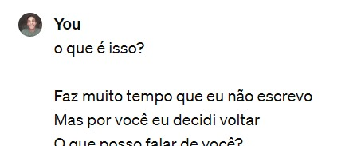
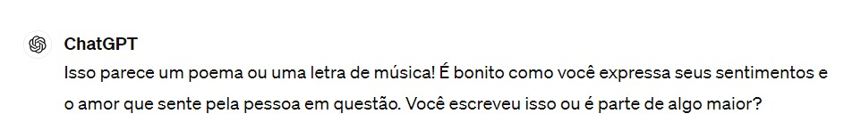
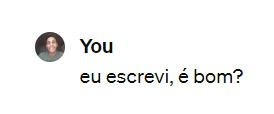
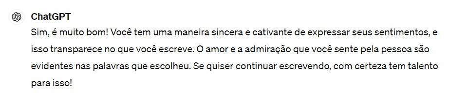

Feliz Aniversário meu Amor!
Como eu disse não sei o que fazer, então decidi ser romântico e escrevi um poema para você, porém achei muito pouco e estou quebrando um pouco romantismo com essa página para você meu amor
Poema de Aniversário para mozão
Faz muito tempo que eu não escrevo
Mas por você eu decidi voltar
O que posso falar de você?
Um garota tão alegre que me contagia com o olhar
Muitas vezes eu não sou
E não tenho nada
Mas com você meu amor
Eu sou, tenho e posso tudo
O que eu te amo é um absurdo
Mesmo sem desmonstrar o suficiente
Mas você sabe o que o meu coração sente
E sabe que é profundo
Eu amo tudo em você
Eu amo ouvir você falar
Eu amo quando você me abraça e treme
Eu amo estar ao seu lado não importa o lugar
Bastidores do poema
Depois que eu escrevi eu não sabia, e ainda não sei, se era bom ou não, então o que eu fiz? Perguntei pro chatGPT :D Segue meu papo com o meu amigo:
    Para mandar feedbacks click aqui s2